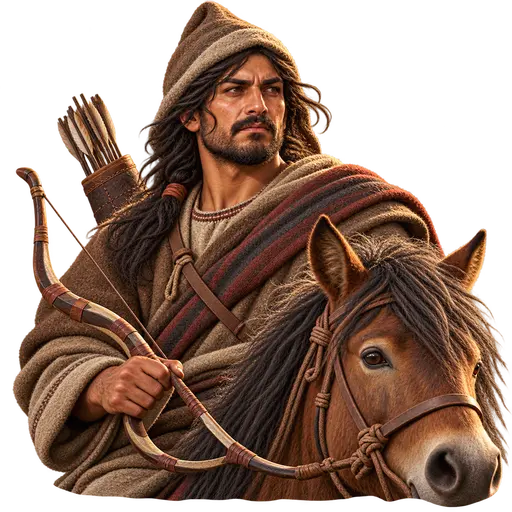
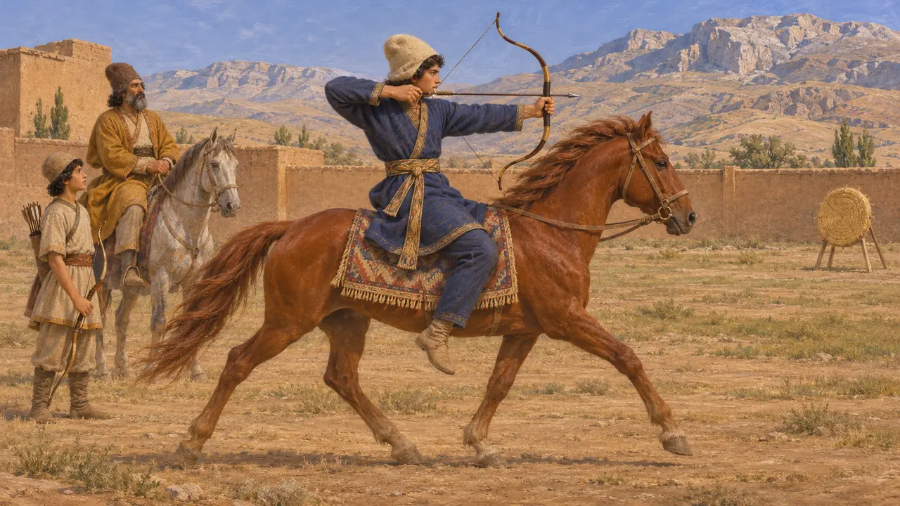
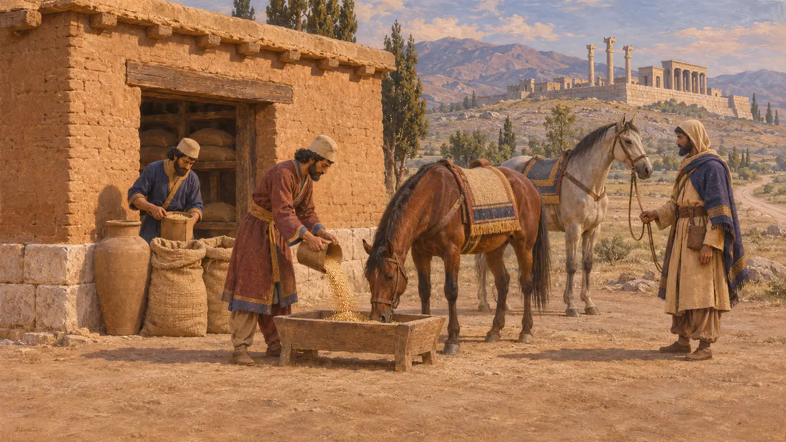
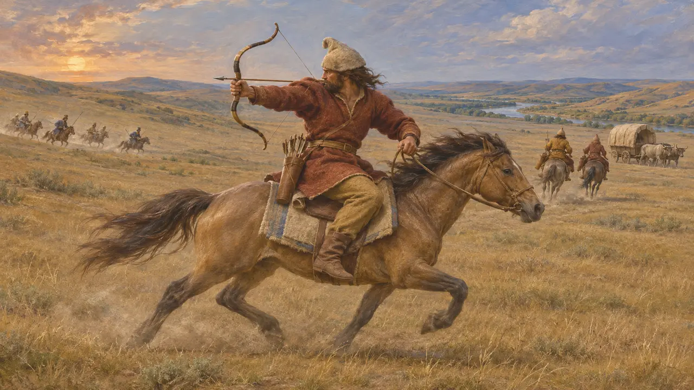
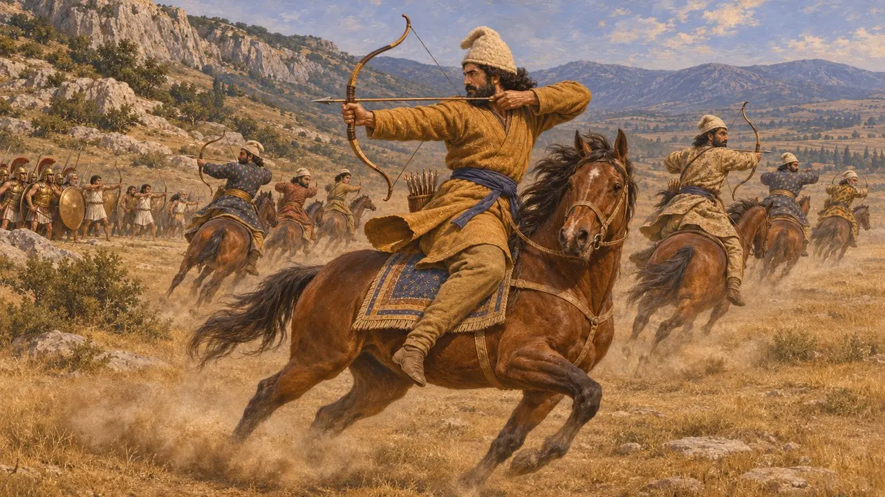
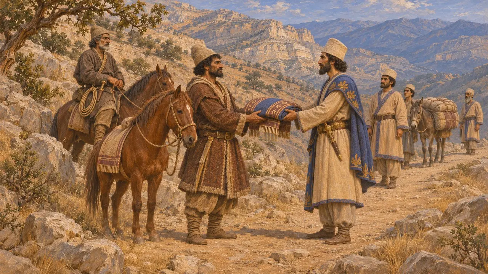

Arciere a cavallo delle colline
Arciere a cavallo tra i nemici del Re nel gioco, circa 530-479 a.C.
Gli arcieri a cavallo tiravano dalla sella: si avvicinavano, scoccavano le frecce e si ritiravano prima che i fanti potessero raggiungerli. I Persiani stessi combattevano così, e il Re incontrò questa tattica tra i nomadi e presso gli Sciti oltre l'Istro. L'Arciere a cavallo delle colline del gioco è una figura composita di questi nemici, non un popolo attestato nelle fonti.
Nel gioco: Il suo nome cambia con il livello; aggira i fianchi della città, tira e si allontana al galoppo; i cavalieri lo travolgono, mentre gli scudi dei lancieri fermano le sue frecce. La storia fu più dura: a Platea gli arcieri a cavallo tormentarono pesantemente la fanteria greca.

Cavalcare e tirare con l'arco presso i Persiani
Racconto anticoErodoto racconta che ai ragazzi persiani, dai cinque ai vent'anni, si insegnavano tre cose: cavalcare, tirare con l'arco e dire la verità. Nella visione greca, dunque, cavalcare e tirare con l'arco facevano parte dell'educazione persiana. Erodoto definisce inoltre arcieri a cavallo la cavalleria persiana a Platea: i cavalieri del Re combattevano quindi nello stile che il gioco attribuisce ai suoi nemici.
Herodotus 1.136; 9.49

Il foraggio per i cavalli nelle tavolette
Nelle fontiLe tavolette delle Fortificazioni di Persepoli furono scritte per lo più in elamico tra il 509 e il 493 circa. Registrano grano distribuito come foraggio a cavalli e altri animali, compresi animali in viaggio lungo le strade. Mostrano con quanta precisione l'amministrazione contasse il foraggio. Non dicono nulla dei predoni delle colline, ma aiutano a spiegare perché mantenere uomini a cavallo costasse molto più che mantenere uomini a piedi.
R. Hallock, Persepolis Fortification Tablets, 1969

Il modo di combattere degli Sciti
Racconto anticoErodoto descrive gli Sciti come un popolo senza città né mura, che viveva sui carri e combatteva come arcieri a cavallo. Racconta che quando Dario attraversò l'Istro, intorno al 513, essi rifiutarono la battaglia, ripiegarono, guastarono pozzi e sorgenti e assalirono con la cavalleria i foraggiatori persiani. Nel suo racconto la cavalleria scita mise più volte in rotta quella persiana, e alla fine Dario si ritirò oltre il fiume.
Herodotus 4.46; 4.120-134

Squadroni che tiravano e ripiegavano
Racconto anticoErodoto racconta che nel 479, presso Platea, Masistio guidò la cavalleria persiana all'attacco a squadroni che avanzavano a turno e incalzavano duramente i Megaresi. Sopraggiunsero i soldati scelti e gli arcieri ateniesi. Il cavallo di Masistio fu colpito ed egli fu ucciso; dopo una lotta attorno al suo corpo, la cavalleria si ritirò. In seguito i cavalieri, che Erodoto chiama arcieri a cavallo, bersagliarono i Greci di frecce e ostruirono la fonte Gargafia.
Herodotus 9.20-25; 9.49

I popoli delle colline combattevano a cavallo
ContesoErodoto annovera i Mardi e i Sagarti tra le tribù persiane nomadi e racconta che i Sagarti cavalcavano per Serse armati di lacci e pugnali, non di archi. Arriano riferisce che gli Uxi dei monti Zagros riscuotevano dal Re un compenso per il passaggio. Gli scrittori greci vi lessero un segno di debolezza regale, mentre Briant sostiene che si trattasse di uno scambio negoziato di doni. Nessuna fonte presenta questi popoli delle colline come arcieri a cavallo: l'unità del gioco prende in prestito quello stile.
Herodotus 1.125; 7.85; Arrian, Anabasis 3.17; P. Briant, From Cyrus to Alexander, 2002
Fonti
- Herodotus, Histories 1.125; 1.136; 4.46; 4.120-134; 7.85; 9.20-25; 9.49
- Arrian, Anabasis 3.17
- R. Hallock, Persepolis Fortification Tablets, 1969
- P. Briant, From Cyrus to Alexander, 2002